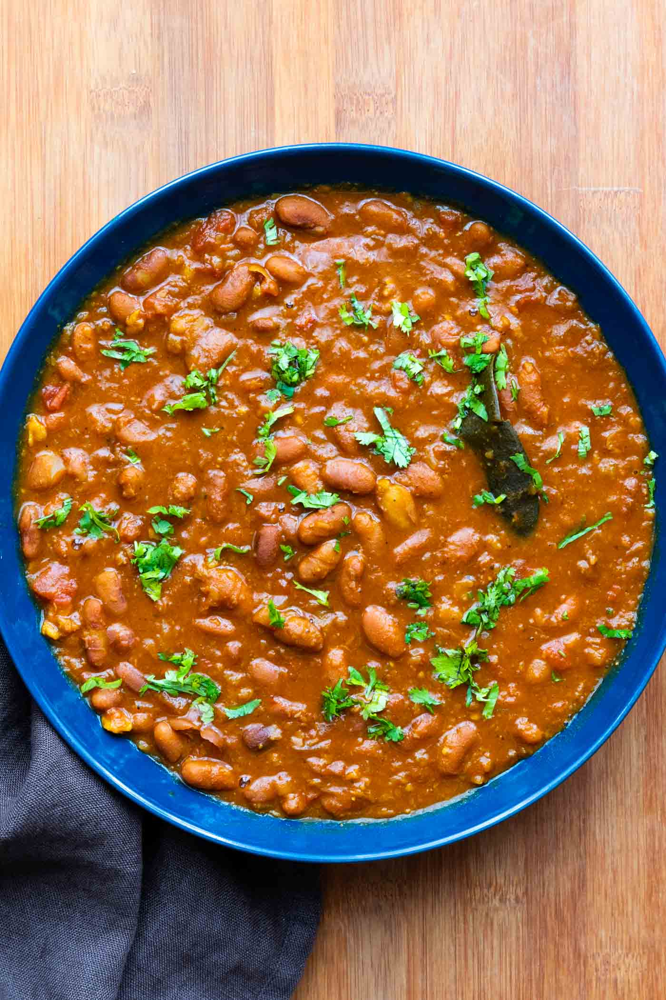

Rajma Recipe

Description
Elevate your taste buds with the rich and flavorful Rajma. This North Indian classic combines tender kidney beans with a medley of aromatic spices, creating a hearty and satisfying dish that's perfect for any occasion.
Ingredients:
- 1 cup Rajma (kidney beans), soaked overnight
- 1 large onion, finely chopped
- 2 tomatoes, pureed
- 2 green chilies, finely chopped
- 1 tablespoon ginger-garlic paste
- 1 teaspoon cumin seeds
- 1 teaspoon red chili powder
- 1/2 teaspoon turmeric powder
- 1 teaspoon coriander powder
- 1 teaspoon garam masala
- Salt to taste
- Cooking oil
- Fresh coriander leaves for garnish
Steps:
- Cook the soaked Rajma until tender in a pressure cooker.
- Sauté onions in oil with cumin seeds until golden brown.
- Add ginger-garlic paste and green chilies, sauté for a minute.
- Mix in tomato puree, cook until oil separates.
- Add red chili powder, turmeric powder, coriander powder, and salt. Cook for a few minutes.
- Add the cooked Rajma, adjust consistency with water, and simmer for 15-20 minutes.
- Sprinkle garam masala, garnish with fresh coriander leaves.
- Serve the aromatic Rajma with rice or bread, and enjoy the burst of flavors!
Home